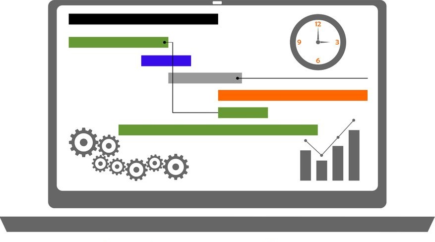
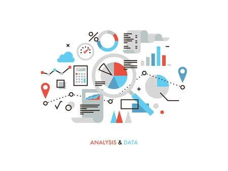

Custom Solutions
Need specialized software tools for your industry? Do you have an inhouse application that needs updated with new features? We can work with you to design and build custom systems to solve your business problems. If your business already has custom software built, we can help bring it back to life with new features and modern interfaces.
We believe the key to building great software is client engagement. We work directly with our clients to gain understanding into the critical processes and requirements needed to build a great solution.
JNC Tech can help your business by:
- Finding trends or metrics in existing data sets
- Managing pricing and inventory data
- Business process control and traceability
- Data collection and presentation
- Updating existing tools with new features
- Creating systems to help adhere to new industry standards
We'll work with you to create solutions. If you know you have a tech problem, but aren't quite sure how to fix it, get in touch with us.

